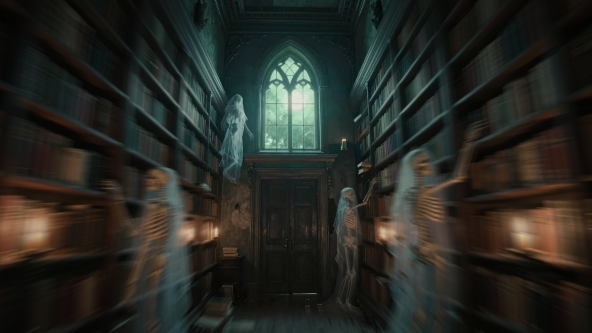
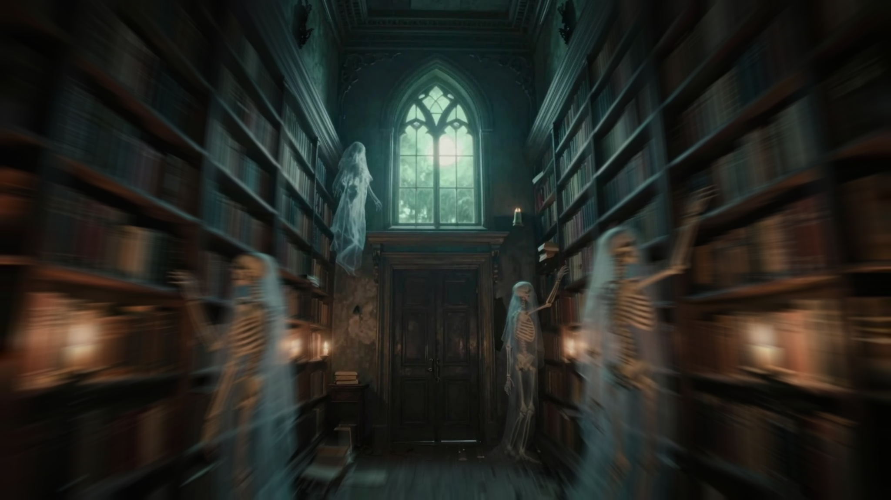
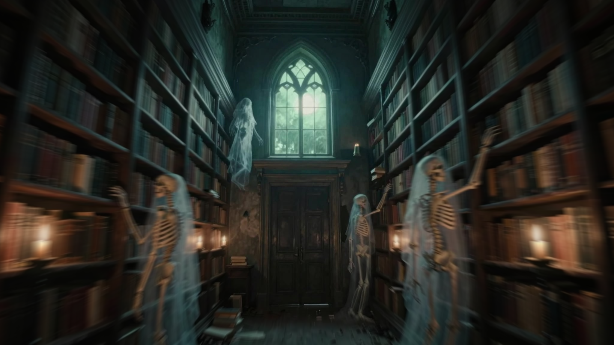

We now read the Action as depth-banded compositing, not one continuous depth-scaled radial blur.
This entry is a chronological research record. The Markdown docs remain current architecture. Camotion code, tests, and CameraMotionPlan v1 are unchanged. Terran Boylan originated TunnelVision as a manual filmmaking technique; this research extends it into an agentic system. Camotion is not a port of Terran’s Photoshop Action. Interpretations and hypotheses below are ours, not claims Terran made.
What we believed going in
By 31 August 2026, optional near-weight scaling had improved the Ghost Library still, especially far-field stability, but video generation still produced a recursive / reconstructed-space effect. Direct comparison with Terran’s original TunnelVision Ghost Library motion frame showed similarly strong near-field motion and stable distant architecture. That weakened the hypothesis that depth weighting itself caused the recursion. We stopped speculative renderer work and asked Terran for higher-authority evidence of the original Action.
Known ingredient, then a still-image win
PRIOR RESULT
Depth was already a known ingredient of Terran’s original TunnelVision workflow. The 01.4 Ghost Library still applied a continuous near-weight multiplier to Camotion’s radial field. Relative to radial-only 01.3, distant architecture such as the gothic window stayed substantially more stable. At the still-image level, depth weighting looked like the right next variable.
Video still reconstructed the space
UNRESOLVED ARTIFACT
Video-generation tests from depth-weighted shooting frames still showed the strange recursive / reconstituted-library behavior. A control without an extra pristine reference still did. At that point it was easy to suspect that our new depth path was the cause.
Terran’s original frame weakened that suspicion
HYPOTHESIS WEAKENED
Terran’s original Ghost Library motion-conditioned frame also uses strong near-field motion and keeps far architecture comparatively sharp. Depth-aware motion itself is consistent with the original technique. The remaining open question was the character of Camotion’s continuously depth-scaled radial exposure versus whatever Terran’s Action actually did.
Stop guessing. Obtain the Action.
DECISION
We deliberately stopped speculative renderer changes. Terran supplied the original Photoshop .ATN from his TunnelVision motion-conditioning workflow, stored as camotion/tuning/Auto-3D-Radial-Blur-Save-Close.ATN.
Binary forensics, then ActionJSON
EVIDENCE
primary export: camotion/tuning/async function auto3DRadialBlurSave.json
Binary inspection of the .ATN showed Photoshop Neural Filter depth processing, multiple Radial Blur operations, Gaussian Blur, inversion, Levels, masks/selections, layer duplication/compositing, and merge/save/close. Before reverse engineering had to proceed entirely from the binary, Terran supplied a Photoshop batchPlay / ActionJSON-style export. That JSON is the primary evidence for the meaningful image-processing sequence.
The embedded Neural Filter graph includes depth-related nodes such as depthMapProviderV2Local, Depth_Estimation, and Depth_Estimation_Refinement2. The important architectural fact is that Photoshop generates and refines a depth representation. The graph itself is not documented exhaustively here.
Observed layer/mask sequence
ACTION OBSERVATION
From the JSON, the meaningful stack is approximately:
Background copy — image = Zoom Blur 12 (method Zoom, quality Best, center 0.5, 0.5). Mask = Neural Filter depth, then Invert, Gaussian Blur radius 10, then the same Zoom Blur 12.
Background copy 2 — image = Zoom Blur 8 (same method/quality/center). Mask = a second Neural Filter depth from the pristine source, then Levels composite input [203, 243], Invert, Gaussian Blur radius 2.
Background — pristine source, underneath.
Photoshop then selects/merges, saves, and closes. This is an observation of Terran’s Action, not a Camotion implementation plan.
Major discovery: two exposures, not one scaled blur
REVISED MODEL
Terran’s result is better understood as Blur-12 + Blur-8 + pristine, composited through depth-derived masks, than as one continuously depth-scaled radial blur. Interpretation (ours): depth-banded, motion-aware exposure compositing. Near: Blur 12 dominates. Mid: Blur 12 fades, Blur 8 remains. Far: Blur 8 fades, pristine increasingly dominates.
Stronger discovery: the strong mask is itself zoom-blurred
REVISED MODEL
Current Camotion approximately does radial_motion(x,y) × depth_weight(x,y), so the depth weighting stays spatially tied to original geometry. Terran’s Action instead approximately composites a motion-treated image through a motion-treated depth visibility mask. The boundary that controls where the blurred exposure contributes is itself spread along the exposure path.
Hypothesis (ours, unproven in Camotion): this may help depth boundaries read as integrated photographic motion rather than stretched/warped scene geometry.
Mask polarity (analysis, not a Terran claim)
INTERPRETATION
Available evidence supports reading the Action’s working depth as approximately black = near, white = far — the same polarity as our Ghost Library depth proxy before we invert it for Camotion’s near-weight convention. After Invert, the strong mask is approximately white near / black far. Photoshop layer masks reveal with white, so Blur 12 dominates near geometry and disappears with depth. After Levels [203, 243] and Invert, the medium mask approximately reveals Blur 8 over near/mid geometry and suppresses it over the furthest range.
Diagnostic approximation, not a faithful reconstruction. This PNG is not Photoshop’s Neural Filter depth output, not Photoshop Radial Blur, not a pixel-faithful recreation of Terran’s Action, and not a Camotion renderer result. It exists only to reason about mask polarity and spatial behavior using the existing Ghost Library depth proxy and an approximate zoom-blur implementation.
Revised hypothesis for the recursive-space artifact
HYPOTHESIS
The recursive-space issue may relate to the character of Camotion’s current continuously depth-scaled radial exposure/warping, while Terran’s layered, motion-aware mask treatment may produce a more photographic conditioning signal. This has not been proven. It replaces the weaker “depth weighting caused the recursion” hypothesis, which Terran’s original frame had already made less convincing.
Checkpoint decision
ATN / ActionJSON forensics are complete enough to stop reverse engineering and begin a controlled Camotion renderer experiment. That experiment is not implemented in this checkpoint.
Next test: whether deterministic depth-banded + motion-aware + multi-exposure compositing produces a more photographic and generative-video-legible shooting frame than the current continuous depth-multiplier renderer. Treat it as an experimental path, not a replacement. Compare against the existing Ghost Library fixture before any renderer replacement decision.
Preserve Camotion / TunnelVision extensions Terran’s Action did not have: Cinematographer-selected vanishing point rather than a fixed Photoshop center of 0.5, 0.5; destination protection; external/interchangeable depth; normalized geometry; deterministic/testable processing; later, context-aware parameters rather than permanently hardcoded 12 / 8 / 203–243.
Do not change CameraMotionPlan v1. Do not add Photoshop fields to the plan. Do not move depth estimation into Camotion. Do not add Neural Filters. Do not implement B_in/B_out, turning/yaw/strafe, or video-architecture changes. Do not remove the current continuous near-weight path.
Intended order after this record: controlled Camotion renderer experiment → validate/freeze an updated baseline if justified → Automated Cinematographer + Camotion Benchmark Harness → cross-style / cross-model experiments.
Split of labor unchanged: agent reasons → CV observes/measures → Camotion renders → video model films.
DEPTH-BANDED COMPOSITOR · SEPTEMBER 2, 2026
Ghost Library 01.5 reduced recursive reconstruction. It did not eliminate it.
This entry is a chronological research record after the Terran Action checkpoint. The Markdown docs remain current architecture. CameraMotionPlan v1 and default render() were not changed. The experimental compositor is not a frozen baseline. Interpretations below are ours, not claims Terran Boylan made. Terran originated TunnelVision as a manual technique; this research is the agentic extension.
What we believed going in
ATN / ActionJSON reverse engineering suggested Terran’s result was depth-banded, motion-aware compositing, including Zoom Blur on the strong depth mask itself. We hypothesized that a Camotion experiment with that structure might be more photographic and more generative-video-legible than continuously depth-scaled radial exposure. That had not been tested.
Experimental path, default renderer left alone
METHOD
We implemented a controlled experimental renderer without changing normal render() or CameraMotionPlan v1. It reuses existing radial multisample exposure at two strengths: a strong branch at the plan’s exposure.strength, and a medium branch at that strength × 8/12.
A near/mid mask, derived from Camotion near_weight (white=near), controls the medium branch. A Gaussian-softened strong depth mask is itself passed through the same radial exposure before controlling the strong branch. Layers composite over pristine source; existing destination protection is applied last.
Ghost Library still 01.5
STILL LOOKS MORE PHOTOGRAPHIC
camotion/tuning/01.5-banded-result.png · same 01.4 plan · 01-depth.png as white=near near_weight · not a frozen baseline

Experimental comparison still, not a new production baseline. Qualitatively: strong near-shelf/figure motion, intermediate mid-depth motion, stable far architecture, a spatially legible doorway/window, receding shelves that read more like continuous depth than radially stretched geometry. Visual quality is not a mathematical proof.
camotion/tuning/01.5-banded-video.mp4 · same general locomotion setup as the prior Ghost Library test · one fixture
The previous 01.4-era generation showed substantial recursive/reconstructed-space behavior across roughly the first 1–3 seconds. With the 01.5 banded shooting frame, that pathology was materially reduced. The generated shot remains recognizably within one library space through most of the early traversal, reaches the doorway, crosses the threshold, and continues into the courtyard.
On the Ghost Library fixture, the depth-banded, motion-aware compositor produced a more photographic shooting frame and materially reduced the recursive-space reconstruction seen in the previous video-generation experiment. A shorter reconstruction artifact remained during approximately the first second.
Not solved
PARTIAL SUCCESS
The problem is not eliminated. Recursion is not solved. 01.5 is not universally better, not validated across scenes, and is not a permanent replacement for the continuous near_weight renderer. Terran’s method did not “directly solve” the problem. This is one fixture and one generated comparison.
Revised next hypothesis
HYPOTHESIS
Supporting evidence: depth-banded, motion-aware compositing may be a more legible motion-conditioning representation for generative video than continuously depth-scaled radial exposure. Stronger than a still-only hypothesis because the video also improved. Still provisional.
The remaining first-second reconstruction suggests a narrower question: temporal orientation of the start shooting frame. Current outgoing exposure is canonical A → displaced exposure history. For a start frame, the video model may instead benefit from displaced history that terminates at canonical A. Do not treat this as B_in/B_out architecture yet.
The next controlled experiment should change only that start-frame orientation, holding the depth-banded compositor, depth, strengths, masks, destination, locomotion prompt, video settings, and end shooting frame as constant as practical. Not implemented in this checkpoint.
Checkpoint decision
Checkpoint the depth-banded experiment before testing temporal orientation. Default Camotion remains the continuous near-weight path. CameraMotionPlan v1 stays frozen.
This entry is a chronological research record after the 01.5 depth-banded compositor checkpoint. Previous history is unchanged. The Markdown docs remain current architecture. CameraMotionPlan v1 and default render() were not changed. Interpretations below are ours, not claims Terran Boylan made. Terran originated TunnelVision as a manual technique; this research is the agentic extension.
What we believed going in
01.5 outgoing start exposure materially reduced, but did not eliminate, recursive-space reconstruction. The remaining first-second artifact suggested that the start shooting frame might encode the wrong temporal orientation: canonical A as the origin of an outgoing trail, rather than the terminal/current position with motion history behind it. That was a hypothesis, not architecture.
One-variable A/B
METHOD
Control: Ghost Library 01.5 outgoing start frame plus the previously used end shooting frame, locomotion prompt, and video settings. Experiment: the same 01.5 compositor, plan, depth, strengths, masks, destination protection, and end frame; only the start-frame sample set changed from p − field·t to p + field·t. Strong image, medium image, and strong mask shared that orientation. Medium-mask construction was not changed. Reversing Python loop order would not have changed the image; the sample-position set was reversed.
The experimental helper remains in code as evidence. It is not CameraMotionPlan, not default render(), and not A_in/A_out or B_in/B_out architecture.
Ghost Library still 01.6
OPPOSITE TRAIL GEOMETRY
camotion/tuning/01.6-terminal-start-result.png · same 01.4 plan and 01-depth.png as 01.5 · only exposure orientation changed

Same compositor and inputs as 01.5; exposure history terminates at canonical A. Visual smear amount is similar, trails sit on the opposite side of geometry. Diagnostic abs-diff: tuning/analysis/01.6-vs-01.5-absdiff.png.
Corresponding Seedance traversal
WORSE INITIAL RECONSTRUCTION
camotion/tuning/01.6-terminal-start-video.mp4 · same previous end shooting frame, locomotion prompt, and duration/settings as the 01.5 video test · one fixture
On the Ghost Library fixture, reversing the start shooting frame’s exposure orientation so that exposure history terminates at canonical A worsened the initial spatial reconstruction. The video showed a stronger initial collapse/retreat and subsequent reconstruction before establishing coherent forward traversal.
Hypothesis rejected on this fixture
REJECTED
Reject terminal-at-canonical start exposure as the working hypothesis here. Retain the 01.5 outgoing exposure orientation as the current Camotion research baseline. Do not claim universal cross-scene validation. Do not remove the experimental implementation or evidence. Do not tune 01.6. Do not introduce A_in/A_out or B_in/B_out architecture. Do not start another experiment from this record.
The negative result is useful: start-frame temporal orientation is causally relevant to the initial reconstruction on this fixture, and the outgoing 01.5 orientation is the better of the two tested directions.
Checkpoint decision
Keep 01.5 outgoing orientation as the working experimental baseline. Default Camotion remains the continuous near-weight path. CameraMotionPlan v1 stays frozen. Stop here; do not begin the next renderer experiment in this checkpoint.
REDUCED STRENGTH · SEPTEMBER 3, 2026
Halving start-frame strength removed obvious recursion and weakened source-geometry authority.
This entry is a chronological research record after the 01.6 temporal-orientation checkpoint. Previous history is unchanged. The Markdown docs remain current architecture. CameraMotionPlan v1 and default render() were not changed. Interpretations below are ours, not claims Terran Boylan made. Terran originated TunnelVision as a manual technique; this research is the agentic extension.
What we believed going in
01.5 outgoing depth-banded exposure at strength 0.08 remained the working Ghost Library baseline after 01.6 rejected terminal-at-canonical orientation. A brief first-second reconstruction still remained. The next one-variable hypothesis was that the start shooting frame was over-conditioned: too much motion-exposure strength might be causing Seedance 2.5 to reconstruct space at the beginning of the shot.
One-variable A/B
METHOD
Control: 01.5 depth-banded outgoing start frame, strength 0.08. Experiment: the same compositor, Ghost Library source, near_weight, outgoing orientation, medium/strong ratio 8/12, masks, softening, vanishing point, destination protection, sample count, previously used end shooting frame, locomotion prompt, and Seedance 2.5 settings. Only start-frame exposure.strength changed to 0.04. No new plan fields. Fixture: tuning/01.7-banded-strength-004-plan.json.
Ghost Library still 01.7
WEAKER PERIPHERAL EXPOSURE
camotion/tuning/01.7-banded-strength-004-result.png · same 01.jpeg and 01-depth.png as 01.5 · outgoing p − field·t · strength 0.04

Same 01.5 path at half exposure strength. Peripheral smear is weaker; central architecture remains protected. Visual still-quality is not a video-generation verdict.
Corresponding Seedance 2.5 traversal
TRADEOFF, NOT A PROMOTION
camotion/tuning/01.7-banded-strength-004-video.mp4 · same previous end shooting frame, locomotion prompt, and Seedance 2.5 settings as the 01.5 video test · one fixture
01.7 removed the obvious initial recursive/reconstructed-space event seen in 01.5. That is not simply a success. Seedance immediately reinterpreted/warped the starting spatial geometry more substantially. The generated library became a different/narrower inferred corridor rather than preserving the authored starting geometry as closely as directed A→B requires. Later forward traversal and doorway crossing remained coherent.
0.04 is not the new baseline
NOT PROMOTED
Do not describe 01.7 simply as worse, and do not promote it because recursion disappeared. On this Ghost Library / Seedance 2.5 fixture, conditioning strength appears to trade off reconstruction behavior against source-geometry authority. Weaker start-frame exposure reduced obvious recursion and also reduced authority over the authored start.
For directed A→B traversal, the conditioned start and end frames are authoritative shot endpoints. Generated boundary frames should match those supplied endpoints as closely as the video model permits, ideally pixel-perfect. Evaluation priority: endpoint fidelity, then coherent spatial traversal, then locomotion/parallax quality; creative scene evolution must not violate endpoint authority. That requirement is specific to directed A→B. Future Discovery / open-exploration generation may invent future geometry after an authoritative starting frame; that mode is not this experiment and is not current architecture.
Retain 01.5 / 0.08 as the current working baseline for directed A→B research. One fixture, one video model. No universal claim.
Checkpoint decision
Keep 01.5 outgoing exposure at strength 0.08 as the directed A→B working baseline. Keep the 01.7 plan, still, and video as evidence of the tradeoff. Default Camotion remains the continuous near-weight path. CameraMotionPlan v1 stays frozen. Stop here; do not begin the next renderer experiment in this checkpoint.
ROUTE PRESERVATION · SEPTEMBER 3, 2026
Route-preserved 0.08 exposure kept peripheral motion and clarified the central corridor. Seedance later opened backward, then went forward.
This entry is a chronological research record after the 01.7 reduced-strength checkpoint. Previous history is unchanged. The Markdown docs remain current architecture. CameraMotionPlan v1 and default render() were not changed. Interpretations below are ours, not claims Terran Boylan made. Terran originated TunnelVision as a manual technique; this research is the agentic extension.
What we believed going in
01.5 outgoing depth-banded exposure at strength 0.08 remained the video-tested Ghost Library / Seedance 2.5 baseline. 01.7 showed that globally halving strength to 0.04 removed obvious initial recursion but weakened source-geometry authority, so 0.04 was not promoted. The next hypothesis was spatial rather than another global strength cut: keep the stronger 0.08 cue in the periphery, and attenuate exposure along a soft geometric traversal corridor so more canonical route geometry remains.
One-variable spatial modifier
METHOD
Control: 01.5 depth-banded outgoing start frame, strength 0.08. Experiment: the same compositor, Ghost Library source, near_weight, outgoing orientation, medium/strong ratio 8/12, masks, softening, vanishing point, destination protection, and sample count. Only change: an experimental route-preservation corridor, off by default on the 01.5 path. Strength stayed 0.08. No CameraMotionPlan fields. No segmentation, depth model, or LLM. Fixture metadata: tuning/01.8-route-preserved-config.json.
The corridor is a deterministic perspective wedge from the vanishing point through the destination: narrower near the vanishing point, wider toward the foreground, soft-feathered. Existing strong/medium visibility is multiplied by (1 − 0.70 × corridor_mask). Destination protection still runs afterward, separately. Parameters used: top width 0.14, bottom width 0.48, feather 0.10, preservation strength 0.70.
Route-preservation mask
DIAGNOSTIC
camotion/tuning/analysis/01.8-route-preservation-mask.png · white = preserve canonical route · black = retain 01.5 motion treatment
Perspective corridor used to attenuate exposure along the route. Not CameraMotionPlan. Not product architecture.
Ghost Library still 01.8
STILL-LEVEL, NOT A VIDEO VERDICT
camotion/tuning/01.8-route-preserved-result.png · same 01.4 plan and 01-depth.png as 01.5 · outgoing p − field·t · strength 0.08 · route preservation on
Peripheral smear remains strong. The central aisle and door read more like the canonical route. Not a Seedance result.
Visual inspection: 01.8 retained strong peripheral motion treatment, preserved more recognizable canonical geometry through the central traversal corridor, and did not merely reduce global exposure. Some compact central objects, especially mid-field candles, looked more like a single object with continuous blur. In 01.5 those candles had appeared as discrete doubled or repeated instances. That is an observation. A useful later-research hypothesis is that discrete multi-sample ghosting of compact high-contrast features may be interpreted differently by a video model than continuous-looking motion blur. That is not proven, and it is not claimed to have caused any video behavior.
Comparison with Terran's original Ghost Library frame
SPATIAL, NOT AN OPTIMIZATION TARGET
01.5 and 01.8 were compared against Terran Boylan's original TunnelVision-conditioned Ghost Library reference. The images matched in dimensions, so the comparison was registered. 01.8 moved somewhat closer globally, but the more useful result was spatial: the largest improvement was in the central traversal region, while the periphery changed comparatively little. That matches the intended intervention.
Do not treat pixel similarity to Terran's image as an optimization target. Different blur kernels, Photoshop behavior, interpolation, and color handling can change pixels without changing the usefulness of the conditioning cue. Closer pixels are not the same as better Camotion.
Transient Krea rejections were not a 01.8 result
OPERATIONAL CONTEXT
Krea initially rejected 01.8 generations multiple times. A subsequent 01.5 control using the same previously usable workflow was also rejected. Those transient rejections therefore could not be attributed to 01.8. Krea later accepted the 01.8 generation. Video validation is not blocked.
Corresponding Seedance 2.5 traversal
OBSERVATION, NOT A PROMOTION
camotion/tuning/01.8-route-preserved-video.mp4 · same previous end shooting frame, locomotion prompt, and Seedance 2.5 / Krea workflow as the 01.5 video test · one fixture
01.8 preserved enough motion conditioning to eventually produce strong forward traversal, but the opening showed an apparent backward/retreat camera movement before transitioning into forward travel. That is materially different from the desired behavior.
Record this as an observation. Do not say 01.8 solved recursion, that 01.8 is better than 01.5, that route preservation causes reverse motion, that the model definitively interpreted the blur backward, that the candles caused the reversal, or that temporal direction ambiguity is proven.
Exposure cues may not fix temporal direction
HYPOTHESIS, UNPROVEN
The result raises the possibility that Camotion’s still-image exposure cues may communicate motion magnitude, motion axis / expansion geometry, and spatial depth/parallax cues without unambiguously communicating temporal direction. A motion-blurred still can be temporally ambiguous. The model may see evidence of motion along an axis without necessarily knowing which end of the exposure trail represents the current instant.
This is especially interesting in relation to 01.6. 01.6 changed exposure orientation and produced a pronounced collapse/retreat/rebuild behavior on Seedance 2.5 via Krea. 01.8 retains 01.5’s outgoing orientation but selectively attenuates conditioning through the central route while retaining stronger peripheral motion treatment. The new backward-then-forward behavior suggests a possible conflict or ambiguity between preserved central route geometry, strongly motion-conditioned peripheral geometry, and temporal interpretation of the exposure cues.
This is a hypothesis only. It may indicate a useful research question. It requires controlled follow-up. It is not a causal claim, and it does not rewrite the 01.5 / 01.6 / 01.7 observations.
01.8 is not the new baseline
NOT PROMOTED
01.8 is a valuable experimental result: the still intervention behaved spatially as intended, central route geometry was better preserved, peripheral conditioning remained strong, compact-object ghosting changed in a potentially meaningful way, and the video exposed a new backward→forward temporal behavior. It is informative, not promoted.
Retain 01.5 / 0.08 / outgoing depth-banded exposure as the current best video-tested directed A→B baseline. One fixture, one video model. No universal claim.
Checkpoint decision
Keep 01.5 / 0.08 as the current video-tested directed A→B baseline. Keep the 01.8 implementation, config, still, route mask, and video as experimental evidence. Route preservation is experimental research code, not CameraMotionPlan and not canonical architecture. Default Camotion remains the continuous near-weight path. CameraMotionPlan v1 stays frozen. The next planned engineering work is a reusable Replicate MediaProvider plus experiment runner, then controlled reruns of the historical Camotion experiments. That work has not started. Do not begin 01.9 from this checkpoint.